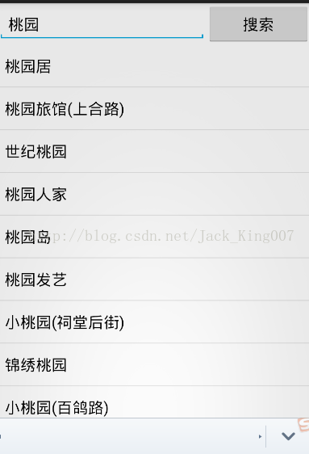

最近打算高仿深圳通的应用，UI已经做好了，我看过APP的查询接口，断了网也可以查询这就表明数据是保存在数据库，或者就是第一次联网，就在网站将数据全部下好了。我就想干脆用地图提供的查询吧。
以前是接触的百度地图，不过百度地图，不怎么好用，我也就用高德地图了关于工程建立 可以看官方文档，
到后面的项目，说不是很清楚，要看官方demo才行。我就干脆自己写一个。 看UI吧 我再把UI代码贴出来

Edittext输入信息 button将数据提交查询 listview 显示查询回调的数据
<?xml version="1.0" encoding="utf-8"?>
<LinearLayout xmlns:android="http://schemas.android.com/apk/res/android"
xmlns:tools="http://schemas.android.com/tools"
android:layout_width="match_parent"
android:layout_height="match_parent"
android:orientation="vertical" >
<LinearLayout
android:layout_width="match_parent"
android:layout_height="wrap_content"
android:orientation="horizontal"
tools:ignore="UselessLeaf,UselessParent" >
<EditText
android:id="@+id/et_keyword"
android:layout_width="0dp"
android:layout_height="wrap_content"
android:layout_weight="2"
android:hint="请输入关键字" />
<Button
android:id="@+id/btn_search"
android:layout_width="0dp"
android:layout_height="wrap_content"
android:layout_weight="1"
android:text="搜索" />
</LinearLayout>
<ListView
android:id="@+id/lv_result"
android:layout_width="match_parent"
android:layout_height="match_parent" />
</LinearLayout>第一步：初始化控件
// 控件相关 private EditText mEtKeyword; private Button mBtnSearch; private ListView mLvResult;
private void initView() {
mEtKeyword = (EditText) findViewById(R.id.et_keyword);
mBtnSearch = (Button) findViewById(R.id.btn_search);
mLvResult = (ListView) findViewById(R.id.lv_result);
mBtnSearch.setOnClickListener(this);
mLvResult.setOnItemClickListener(this);
}第二部 看button点击事件处理
@Override
public void onClick(View v) {
switch (v.getId()) {
case R.id.btn_search:
//1.获得用户输入数据
String keyword = mEtKeyword.getText().toString();
//2.判断用户是否输入为空
if (keyword.trim().length() == 0) {
Toast.makeText(this, "请输入查询条件", Toast.LENGTH_LONG).show();
} else {
//3.不为空进行搜索
search(keyword);
}
break;
default:
break;
}
}第三步 看搜索数据以及返回
这时候我们看看官方文档是怎么说的
关键字搜索
1.搜索条件设置
您需要通过 PoiSearch.Query(String query, String ctgr, String city) 设置搜索条件。参数“query”为搜索的关键字，“ctgr”为搜索类型（类型参照表从相关下载处获取）、“city”为搜索城市。关键字、类型至少输入一个，搜索城市必须输入。
通过 Query.setPageSize(int) 设置查询每页的结果数目；
通过 Query.setPageNum(int) 设置查询第几页。
2.发送请求和接收数据。
使用 PoiSearch.searchPOIAsyn() 搜索 POI。使用 PoiSearch.setOnPoiSearchListener() 方法设置监听器，在 PoiSearch.OnPoiSearchListener 接口回调方法 onPoiSearched(PoiResult poiResult,int rCode)中处理返回结果。当指定搜索城市时，若没有返回 POI 结果，则会返回包含关键字的建议城市名称。当关键字搜索无结果时，则会返回搜索建议关键字。
SO 我们先定义 // 兴趣点查询先关
private PoiSearch search;
//会返回查询数据的类
private PoiSearch.Query query;
因为我在深圳 所以 我会搜深圳的东西
private void search(String keyword) {
// 初始化查询条件
query = new Query(keyword, null, "深圳");
query.setPageSize(10);
query.setPageNum(1);
// 查询兴趣点
search = new PoiSearch(this, query);
// 异步搜索
search.searchPOIAsyn();
search.setOnPoiSearchListener(this);
}第四步 看回调数据 因为我们自己设置了 返回10条数据 用listview 显示
/* -------------------- 兴趣点查询回调 -------------------- */
@Override
public void onPoiItemDetailSearched(PoiItemDetail arg0, int arg1) {
}
@Override
public void onPoiSearched(PoiResult poiResult, int rCode) {
List<String> strs = new ArrayList<String>();
items = poiResult.getPois();
if (items != null && items.size() > 0) {
PoiItem item = null;
for (int i = 0, count = items.size(); i < count; i++) {
item = items.get(i);
strs.add(item.getTitle());
}
// 给ListView赋值，显示结果
ArrayAdapter<String> array = new ArrayAdapter<String>(this,
android.R.layout.simple_list_item_1, strs);
mLvResult.setAdapter(array);
}
}
/* -------------------- 兴趣点查询回调 -------------------- */